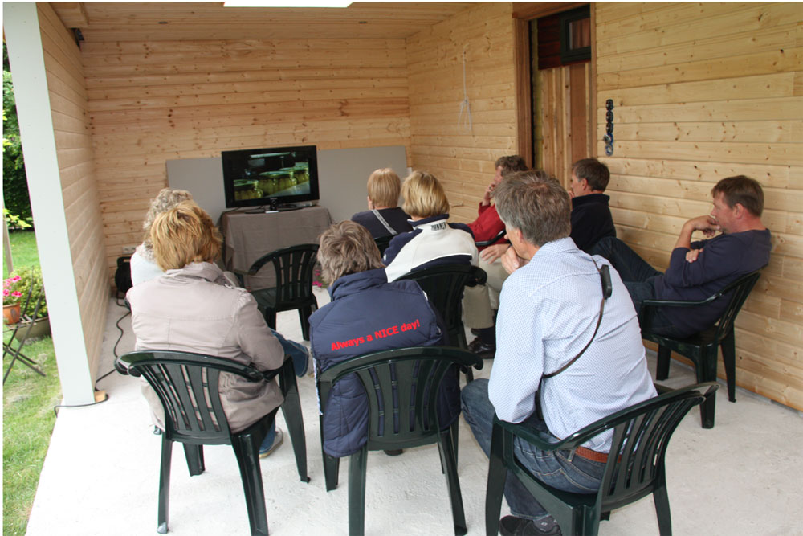

ExcursieWe organiseren twee keer in de week een excursie waar u zich voor kunt inschrijven doormiddel van het sturen van een e-mail of door het telefonisch door te geven. Deze excursies vinden plaats op woensdag- en zaterdagmiddag van 15:30 uur tot 16:30 uur. De kosten van deze rondleiding zijn € 2,50 voor volwassenen. Kinderen tot en met 12 jaar zijn gratis. We organiseren ook rondleidingen/activiteiten op afspraak. Deze rondleidingen kunnen aangepast worden aan de behoeften van de groep. Zo kan er een film getoond worden over de groei van een asperge, er kunnen asperges gestoken worden, er kan informatie gegeven worden over het koken van asperges etc. Ook kan een kok informatie geven over lekkere aspergehapjes en die ook voor u maken. Wilt u tijdens uw bezoek iets drinken, een kopje aspergesoep met stokbrood of een ijsje eten? Ook dat kunnen we voor u regelen. Voor het reserveren van uw bezoek en een prijsopgave kunt u een e-mail sturen naar: info@aspergeboerderijsandur.nl tel: 0591-554375 |
Excursie

